- Theoryparse, bind, optimize, execute
- Baselineplans of Q1, Q2, Q3
- Force joinsLOOP / HASH / MERGE
- Seek vs Scanthe tipping point
- Limitscut-off, spill to tempdb
- Adaptive Joinrun-time choice
What the optimizer chose, and why
Scan + Nested Loops
Seek on Patients (1 row), then a Clustered Index Scan of MRI_Scans = 98 % of the cost (1.44 of 1.47). Estimated 31.17 rows vs. 65 actual — statistics come from a sample.
Same plan, one guess
The LIKE '%T2%SAG%' cannot use a histogram; SQL Server uses a string summary: 13.87 estimated vs. 15 actual rows (truth: 20.3 % of the table matches).
Parallel Hash Match
No filter, so both tables are scanned (DOP 10), hash-joined, and a Top-N sort keeps three rows. Cost 5.10, memory grant 32 MB.
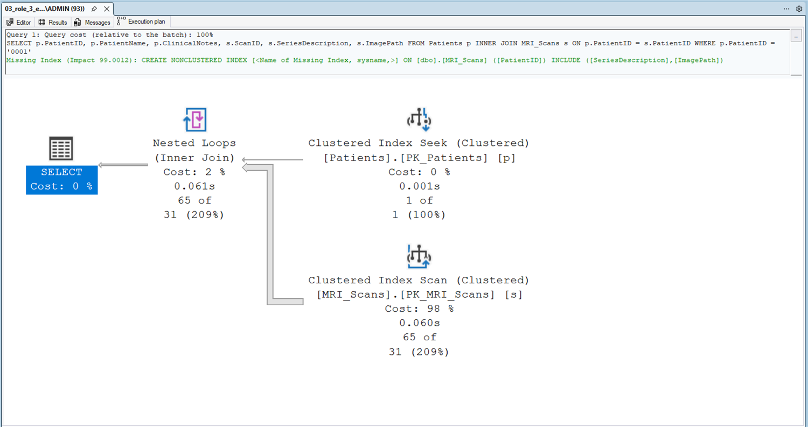
MRI_Scans dominates (98 %).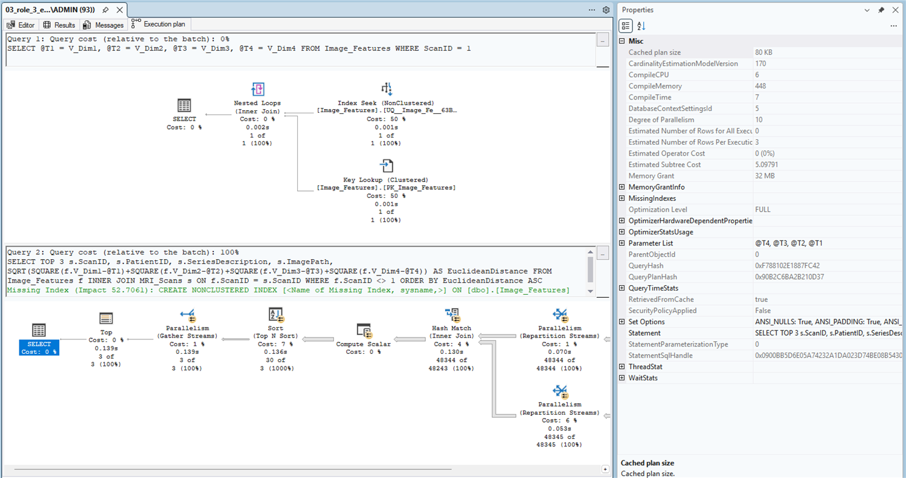
Force the other join algorithms
A hint removes algorithms from the search space, so the cost of the "wrong" plan can be compared like for like. The optimizer's own choice was never beaten.
MRI_Scans once per outer row — 48,344 index seeks — instead of reading it once. For Q1 the outer input is a single row, so the same algorithm is the cheapest. The best algorithm depends on the cardinality of the inputs.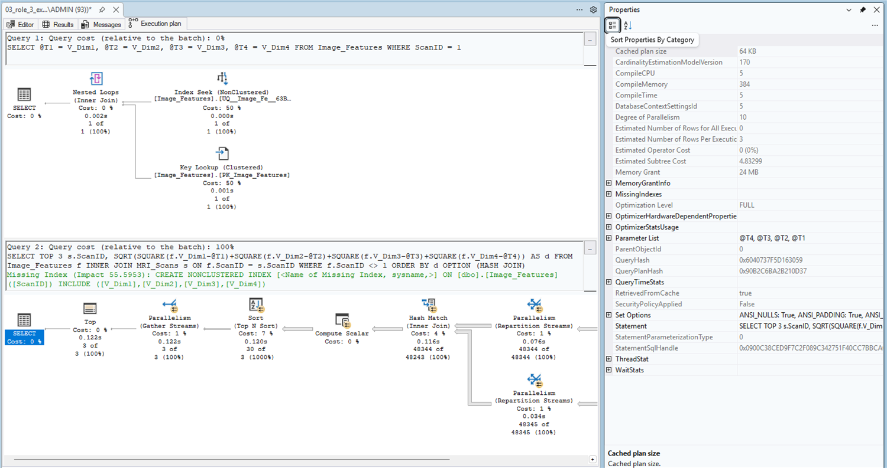
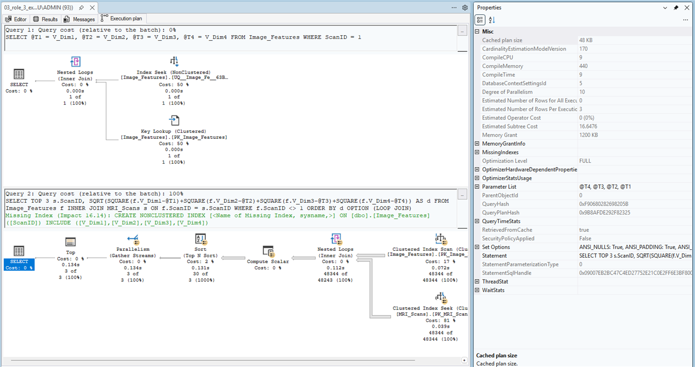
MRI_Scans.The three forced Q3 statements project fewer columns than the canonical Q3, so their costs are comparable with each other (4.83 vs 5.16 vs 16.65), not with 5.10 above.
Seek or scan? It depends on how many rows match
We created a temporary index on MRI_Scans(PatientID) inside a transaction and rolled it back afterwards. Choose a scenario:
No index on the join column: the whole table is read for 65 rows.
65 matching keys, 65 lookups of about three pages each — far fewer than 1,880 pages.
9,060 lookups would cost about 27,000 page reads, more than scanning the table once. The optimizer ignores the index — the tipping point lies between 65 and 9,060 rows.
When everything matches, the scan is the only sensible plan; an index adds nothing.
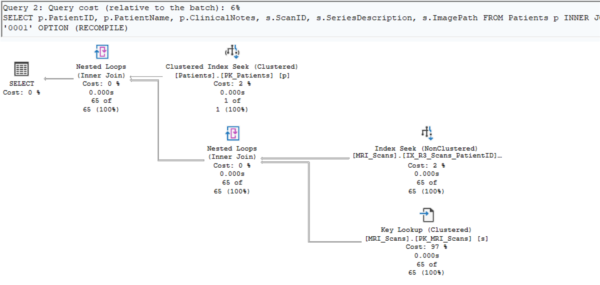
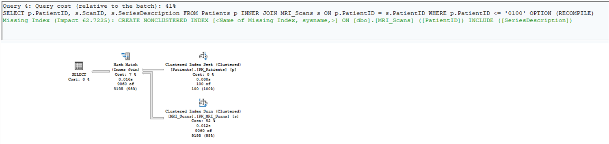
When estimates go wrong
"Good enough" plans
A 14-table join is compiled without running. The optimizer stops with TimeOut after 54 ms and returns the best plan found so far, not a proven optimum. The DMV counter timeout rose 21 → 22.
Memory grant too small
With statistics falsified to "100 rows", a Sort receives 1 MB, writes 1,941 pages to tempdb (level 2) and runs 1.5× slower; a Hash Match spills 6,192 pages (level 3).
Join chosen at run time
The Adaptive Join operator appears with a threshold of 1,025.83 rows. In both parameter cases it stayed a Hash Match — we report that as observed.
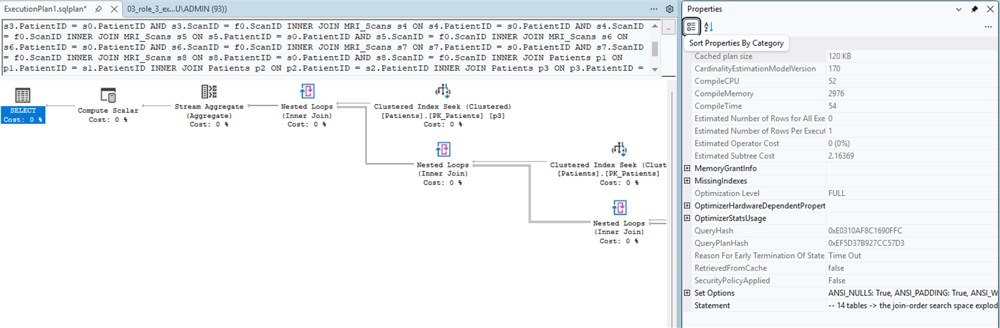
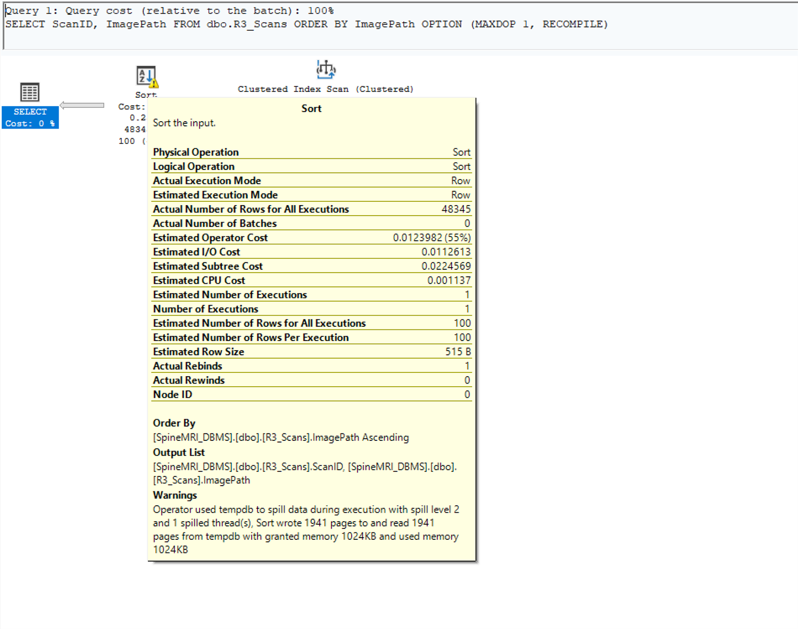
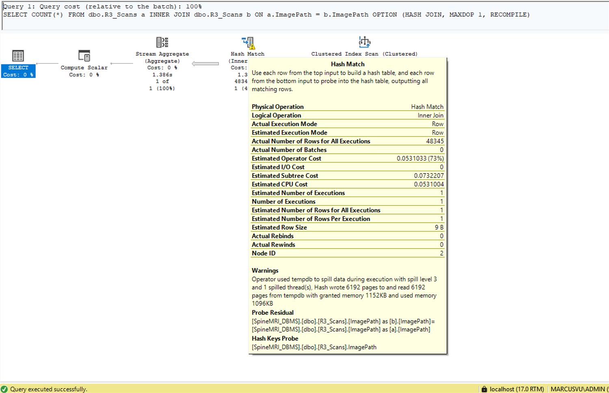
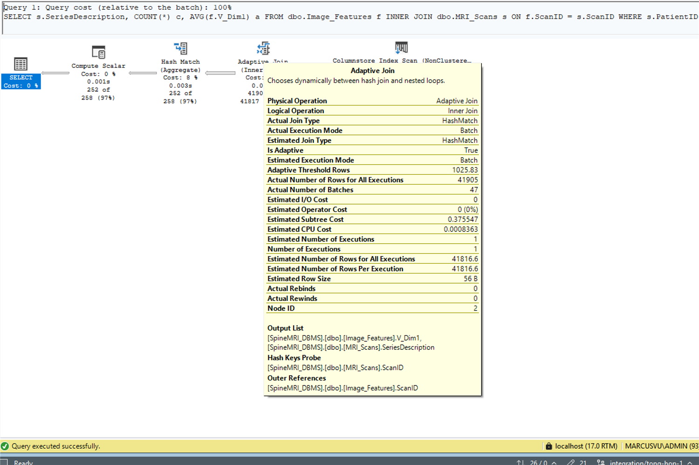
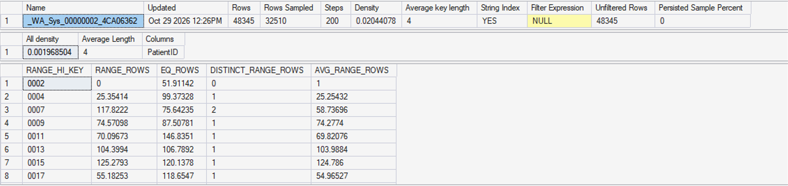
PatientID step is '0002'; the sample holds 32,510 of 48,345 rows.How SQL Server processed Q1, Q2 and Q3
| Q1 | Q2 | Q3 | |
|---|---|---|---|
| Access paths | Seek on Patients, Scan on MRI_Scans | same; LIKE as residual filter | two parallel Clustered Index Scans |
| Join | Nested Loops (1-row outer) | Nested Loops | Hash Match + Repartition Streams |
| Estimated vs. actual rows | 31.2 vs. 65 | 13.9 vs. 15 | 48,243 vs. 48,344 |
| What would change the plan | index on PatientID → Seek, −89 % reads | same | columnstore / batch mode (Role 2) |
| Statistics used | PatientID histogram | histogram + string summary | ScanID histogram, density |